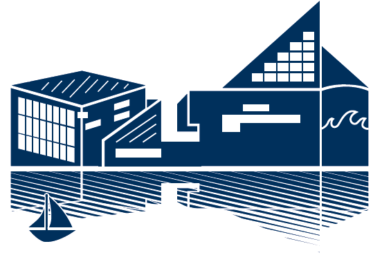

June 22-27, 2014
Baltimore, Maryland, USA
https://2014.aclweb.org
Unified program for the main conference
| Q14 | TACL Papers Presented at 52nd Annual Meeting of the Association for Computational Linguistics |
Published and distributed by the Association for Computational Linguistics
http://www.aclweb.org/
(c) 2014 Association for Computational Linguistics